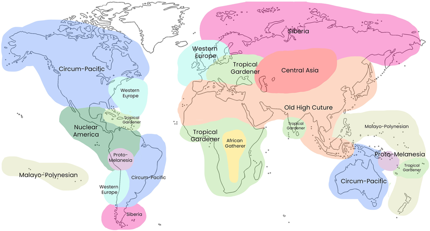

Music Across Culture
Emotional perception of music is shaped both by cultural conditioning and the brains neurological responses to musical stimuli.

Why does music cause emotions?
History of emotion in western music
How other cultures experience western music
Other cultures music (Pecking opera, middle eastern, african)
Comparison of 2 songss with the same intended emotion
Summary: Why is some shared why is some not?